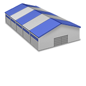
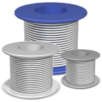
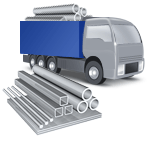
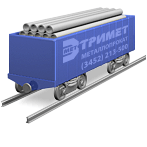
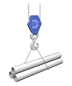

Наши партнеры

На сегодняшний день налажены долгосрочные взаимоотношения со многими крупными заводами-изготовителями металлопроката России и зарубежья:
- ММК, НЛМК, Северсталь, Запорожсталь, НСММЗ, Мечел, МЗ им Серова;
- Евразхолдинг, Уральская сталь, Кармет, Ашинский МЗ, Амурметалл, Гурьевский МЗ, Чусовской МЗ, Верхнесалдинский МЗ, Омутнинский МЗ, Ревякинский МЗ;
- Борский ТЗ, ТМК, Рязанский ТЗ, Агрисовгаз, Новосибирский завод им. Кузьмина, Уралтрубпром, Уралтрубосталь.
Наши награды

Лучшая металлобаза России 2011
Компания «Тримет» становится победителем конкурса «Лучшая металлобаза России 2011» в номинации «Лучшая металлобаза Урала»

Преимущества
Компания «ТРИМЕТ» — универсальный поставщик черного металлопроката. Входит в тройку лидеров тюменского региона по объемам реализации черного металлопроката.
На сегодняшний день компания «Тримет» обладает рядом преимуществ, позволяющих ей быть максимально полезной, качественно оказывая услуги поставки, и благодаря которым уверено чувствовать себя среди лидеров тюменского региона, —
 |
Удобное месторасположение в сочетании с производственными мощностямиСобственный производственно-складской комплекс с удобными железнодорожным и автомобильным подъездными путями. На территории ПСК расположен крытый склад, площадью 10 тыс. кв.м., и офис компании — оформление документов, расчет и отгрузка осуществляется в одном месте. |
Широкий ассортимент качественного металлопроката и возможность приобретения нужного товара в любое время и в любых объемахСкладские запасы насчитывают более 1500 наименований сорто-марко-типоразмеров продукции и составляют в целом более 4 000 тонн. Будучи независимым металлотрейдером, мы можем гибко выбирать производителя металлопроката, ориентируясь на рыночную конъюнктуру и качество. Продукция поставляется с таких заводов, как ЗСМК, НТМК, ММК, ЗАПОРОЖСТАЛЬ, СЕВЕРСТАЛЬ, НСММЗ и др. Весь металлопрокат хранится на крытом складе. |
 |
 |
Металлообработка: резка, рубка, раскрой металла по размерам заказчикаОсуществляем резку металла газом, маятниковой пилой, гильотинными ножницами; правку бухт в прутки. Вы получаете металл такого размера, который Вам не обходим, и можете самостоятельно осуществлять доставку металлопроката малогабаритным транспортом. |
Оптимальная логистика — транспортная, закупочная, сбытовая и складскаяОсновное внимание уделяется складской логистике, как системе оптимизации работы складов и складских запасов металлопродукции. На предприятии введена автоматизированная система учета, позволяющая контролировать объемы поставок, обеспечить максимальную точность исполнения заказов — отпуск необходимой продукции клиентам, вести учет остатков металла. Организована доставка металлопродукции до объекта клиента машинами КАМАЗ и ГАЗель, для междугородних доставок — железнодорожным и водным транспортом. |
 |
 |
Максимальная точность отгрузкиПри выполнении погрузочно-разгрузочных работ применяются современные высокоточные электронные весы, что позволяет гарантировать точность веса отгружаемых партий металла. По завершению погрузки металлопроката осуществляется контроль веса грузовых автомобилей. |
Система скидокНакопительные скидки постоянным клиентам, а также скидки в зависимости от объема партии. |
Активная маркетинговая политикаСледуя за потребностью потребителя, мы ежегодно расширяем ассортимент, осваиваем новые рынки сбыта, предлагаем новые услуги. При этом приоритетным направлением в повышении эффективности продаж является внедрение новых технологий и последних разработок, например, таких, как организация Интернет-продаж. |
КоллективСпециалисты отдела продаж помогут разобраться в технических характеристиках и особенностях применения металлопроката. Высокий профессионализм, компетентность, работоспособность, целеустремленность, личная заинтересованность каждого сотрудника в достижении поставленных задач — главная черта команды специалистов «Тримет». «Тримет» сегодня — это, прежде всего, люди, полные новых идей и энергии, думающие о клиентах компании. |